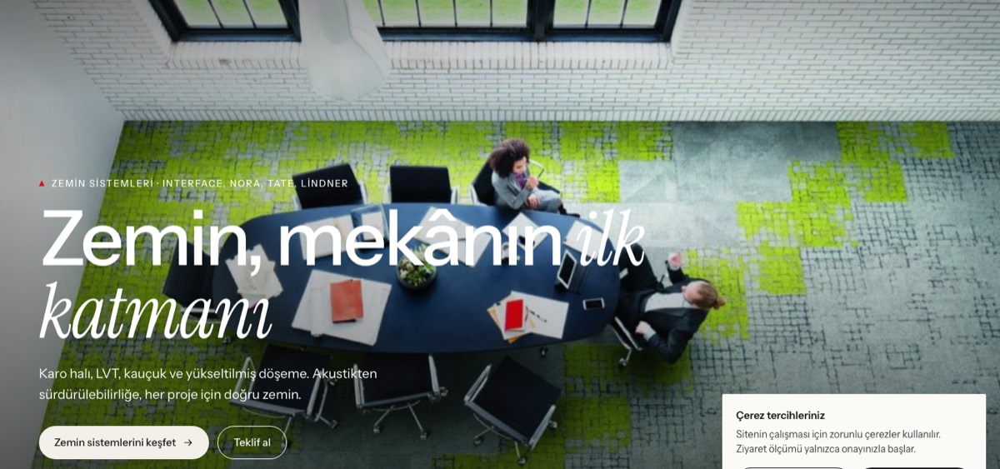
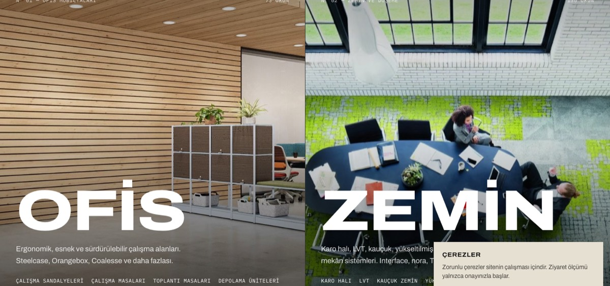
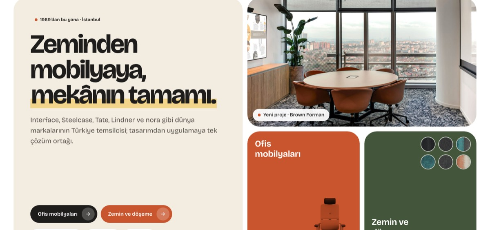
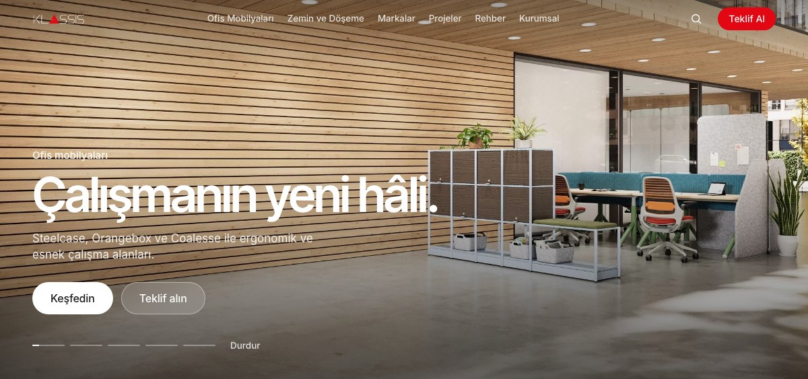

01
Editoryal
Açık kâğıt tonu, bol beyaz alan ve italik serif vurgular. B&T Design ve Modulyss gibi sakin, katalog hissi veren bir dil; fotoğraflar ön planda.
Tasarım 01'i aç →Üç tasarım önerisi ve bir alternatif tasarım; hepsi klassis.com'daki gerçek içerikle hazırlandı: 203 ürün, 18 ürün grubu, 15 marka, 30 proje ve tüm blog yazıları. Sayfa adresleri ve ana sayfa bölümleri her öneride aynı. Böylece bir öneriyi olduğu gibi seçebilir ya da bölümleri öneriler arasında karıştırabilirsiniz.

Açık kâğıt tonu, bol beyaz alan ve italik serif vurgular. B&T Design ve Modulyss gibi sakin, katalog hissi veren bir dil; fotoğraflar ön planda.
Tasarım 01'i aç →
Koyu grafit ve kemik tonu, geniş büyük harfli başlıklar, teknik etiketler. Bolon ve Ege'nin cesur, mimari diline yakın; malzeme dokuları öne çıkar.
Tasarım 02'yi aç →
Beyaz zemin üzerinde malzeme renkleri (kil, yosun, arduvaz, kum), büyük yuvarlatılmış kartlar ve yüzen ada menü. Modulyss ve Ege'nin sıcak, katalog hissine yakın.
Tasarım 03'ü aç →
Üç öneriye ek olarak hazırlanan alternatif yön. Tam ekran giriş slaydı, büyük fotoğraflar ve az metin; beyaz ve açık gri zemin, şeffaf menü. İkon, sayaç ve animasyon en aza indirildi; referans sitelerin görsel ağırlıklı, sade dili.
Alternatif tasarımı aç →Bölüm numaraları her öneride aynıdır. Beğendiğiniz bölümleri numarasıyla belirtmeniz yeterli.
| Bölüm | Tasarım 01 · Editoryal | Tasarım 02 · Mimari / Koyu | Tasarım 03 · Renkli / Yumuşak | Alternatif · Premium / Görsel | Aç |
|---|---|---|---|---|---|
| 01Üst menü | Üst bilgi şeridi (telefon, WhatsApp, showroom) + ortada açılır menüler; giriş görselinin üstünde şeffaf. | Tek satırlık koyu bar: solda Menü düğmesi, ortada Ofis / Zemin geçişi, sağda kırmızı Teklif Al; tam ekran menü. | Sayfanın üstünde yüzen yuvarlak menü adası; görselli açılır menüler, kil rengi Teklif Al. | İnce, şeffaf menü; kaydırınca buzlu cam. Açılır menülerde kategori fotoğrafları. | 010203Alt. |
| 02Giriş | Üç slaytlı tam ekran fotoğraf; büyük başlık, iki buton ve ilerleme çubukları. | İkiye bölünmüş ekran: Ofis ve Zemin yan yana, üzerine gelinen taraf genişler; altında kayan marka şeridi. | Bento ızgara: başlık kutusu, büyük proje görseli, ofis (dekupe sandalye) ve zemin (renk örnekleri) kutuları. | Beş fotoğraflı tam ekran slayt; tek başlık, tek cümle, iki düğme, ince ilerleme çizgileri. | 010203Alt. |
| 03Hakkında | Büyük beyan cümlesi ve çizgili dört istatistik. | Kemik zemin, büyük başlık ve hücreli dört rakam. | Yosun yeşili panelde kısa beyan ve üzerinde küçük etiketler olan büyük fotoğraf. | Ortalanmış tek cümle ve üç fotoğraflı mozaik. | 010203Alt. |
| 04İş kolları | İki büyük fotoğraflı kart; üzerinde alt kategori çipleri. | Sekmeli yapı: Ofis / Zemin seçilince görsel, kategori listesi ve markalar değişir. | Pastel iki kart: dekupe sandalyeler ve yuvarlak halı renk örnekleri. | Yarım ekran iki büyük fotoğraf: Ofis ve Zemin. | 010203Alt. |
| 05Ürün grupları | Sekiz görsel karo, ürün sayısı etiketi. | Numaralı liste; satırın üzerine gelince imleçte görsel belirir. | Renkli, yuvarlak kartlardan yatay kaydırmalı şerit. | Uzun dikey fotoğraflı ürün grubu şeridi. | 010203Alt. |
| 06Öne çıkan proje | Koyu bölümde galeri + proje bilgileri tablosu. | Tam genişlikte fotoğraf, üzerinde bilgi kartı ve küçük görseller. | Yuvarlatılmış görsel + arduvaz mavisi bilgi kartı, yuvarlak küçük görseller. | Tam ekran proje fotoğrafı, üzerinde kısa metin. | 010203Alt. |
| 07Projeler | Sektör ve marka filtreli yatay kaydırmalı şerit. | Sektör sekmeleri + büyük ilk kartlı ızgara, yazılar görsel üstünde. | Segmentli sektör filtresi + masonry proje duvarı. | Sade sektör filtresi + üç sütun büyük proje fotoğrafları. | 010203Alt. |
| 08Markalar | İki sütunlu marka dizini + Steelcase rozeti. | Çizgili marka hücreleri; üzerine gelince kırmızıya döner. | Marka görselli haplar (turuncu halka ofis, yeşil halka zemin). | Marka fotoğrafları şeridi + Steelcase iş ortaklığı. | 010203Alt. |
| 09Sürdürülebilirlik | Görsel + metin, iki rakam. | Dev "378" rakamı, metin ve geniş görsel şeridi. | Açık sarı panelde dairesel rakamlar ve görsel. | Tam genişlik fotoğraf üzerinde tek cümle. | 010203Alt. |
| 10Rehber ve blog | Büyük rehber kartı + yan liste. | Kırmızı rehber kartı + tarihli satır listesi. | Yuvarlak kartlar; rehber sarı kartla öne çıkar. | Üç büyük kapak fotoğraflı yazı. | 010203Alt. |
| 11Teklif formu | Açık zeminde iletişim satırları + beyaz form kartı. | Koyu zeminde iletişim satırları + kemik tonlu form kartı, alt çizgili alanlar. | Üç adımlı teklif sihirbazı (ürün → proje → iletişim). | Yarısı fotoğraf, yarısı tek adımlı sade form. | 010203Alt. |
| 12Alt bilgi | Koyu zemin, e-bülten ve dört sütun. | Dev KLASSİS yazısı, e-bülten ve üç sütun. | Kum renkli yuvarlak alt bilgi; koyu showroom kartı ve e-bülten. | Açık gri alt bilgi; showroom fotoğrafı ve e-bülten. | 010203Alt. |
Ürün grubu, ürün, proje, marka, rehber ve teklif sayfaları da her öneride ayrı tasarlandı ve aynı adreste açılır.
| Şablon | Tasarım 01 | Tasarım 02 | Tasarım 03 | Alternatif | Aç |
|---|---|---|---|---|---|
| Ürün grubu | Üstte filtre çubuğu, 4 sütun ürün kartı | Fotoğraf üstünde dev başlık, solda yan filtreler, 3 sütun | Görselli giriş kartı, arama + segment filtre, özellikler fotoğraflı kartlarda | Tam genişlik fotoğraflı başlık, açık gri ürün kartları, fotoğraflı özellikler | 010203Alt. |
| Ürün | Solda galeri, sağda sabit bilgi paneli ve renk kartelası | Tam genişlikte görsel şeridi; sekmeli renk/doküman/proje; sağda teklif kutusu | Solda yapışkan bilgi kartı (yuvarlak renk seçici), sağda büyük görseller | Büyük galeri ve küçük görseller; sağda sabit bilgi, renk seçici, dokümanlar | 010203Alt. |
| Proje | Fotoğraf üstünde başlık, yapışkan bilgi tablosu, galeri | Dev başlık + dört bilgi hücresi, tam görsel, yatay galeri şeridi | Yuvarlak görsel + üstüne binen başlık kartı, masonry galeri | Tam ekran kapak, künye satırı, büyük iki sütun galeri | 010203Alt. |
| Marka | Büyük marka adı, rakamlar, ürün ızgarası | Ekran boyu marka adı, hücreli bilgiler, yan filtreli ürünler | Pastel bilgi kartı + büyük marka görseli, kategori hapları | Tam genişlik marka fotoğrafı, kategori çipleri, ürün ızgarası | 010203Alt. |
| Rehber yazısı | Ortalanmış başlık, dar metin sütunu | Görsel üstünde başlık, solda yapışkan künye | Ortalanmış başlık, yuvarlak kapak, dar metin sütunu | Kapak fotoğrafı üzerinde başlık, dar ve ferah metin sütunu | 010203Alt. |
| Teklif | Adımlar + iletişim + form | Koyu zeminde adımlar + kemik tonlu form | Üç adımlı sihirbaz + iletişim kartları | Fotoğraf yanında tek adımlı form + doğrudan iletişim | 010203Alt. |